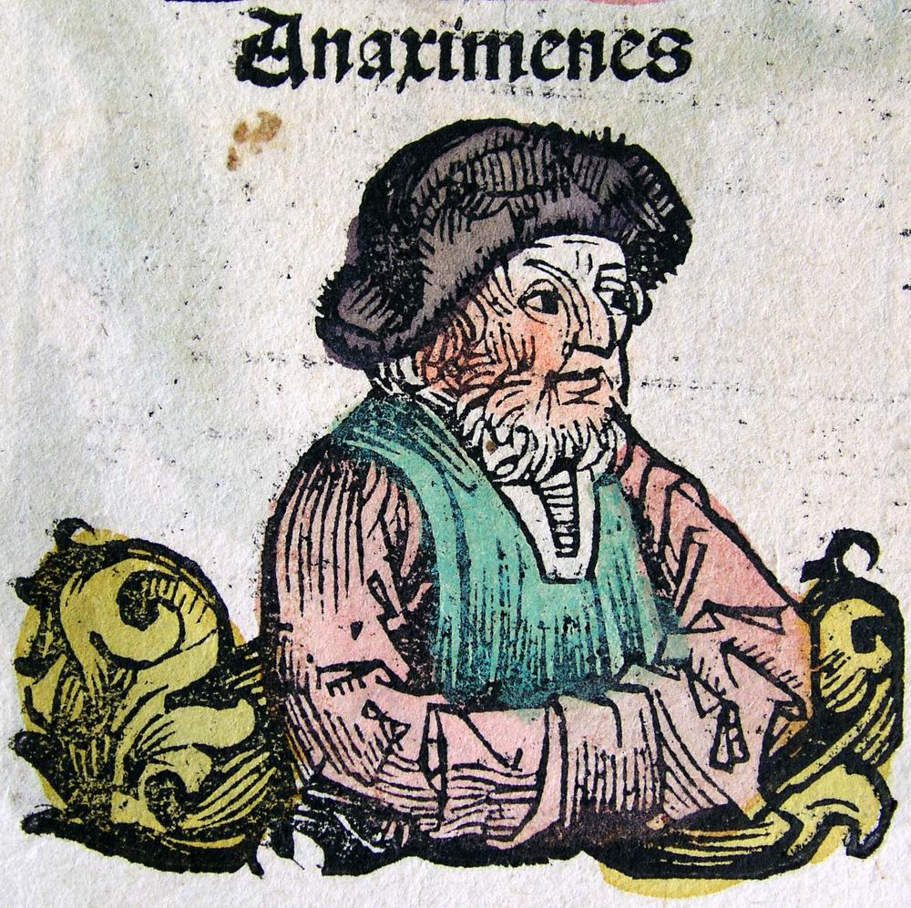
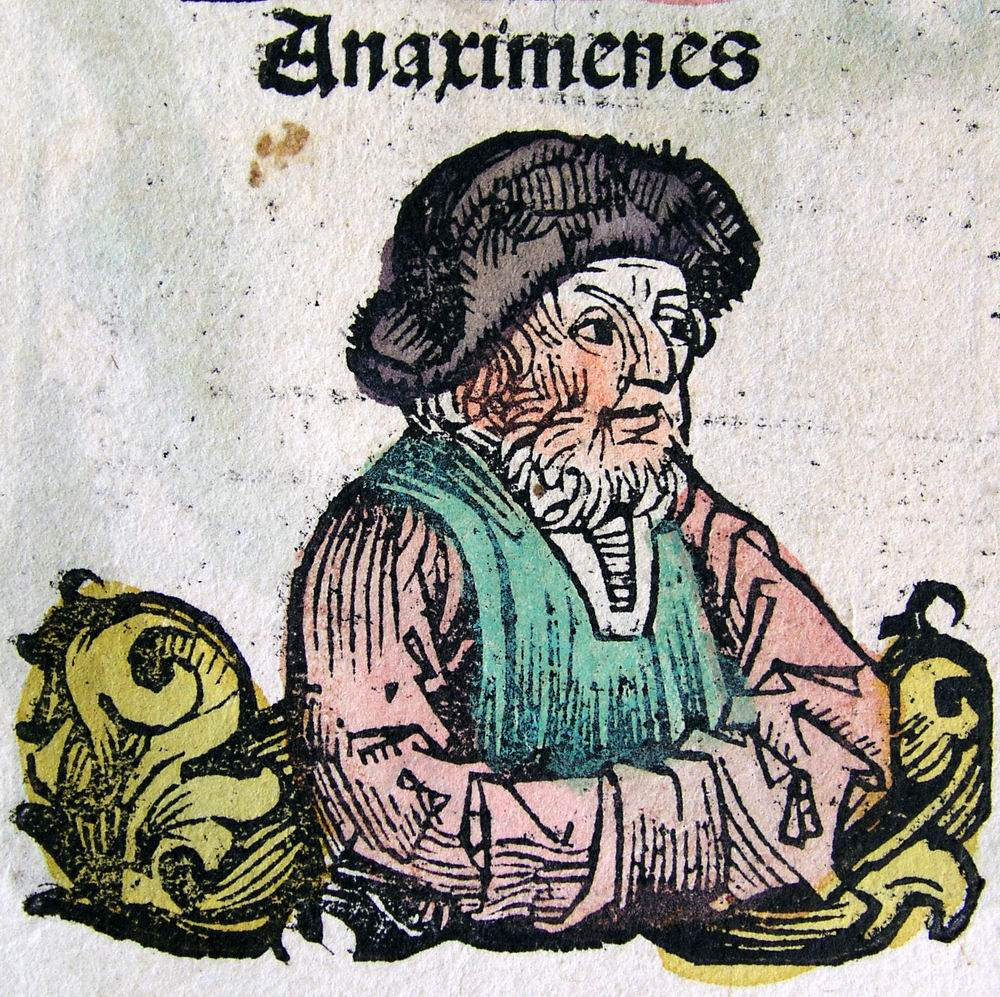
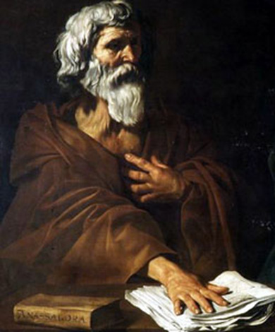
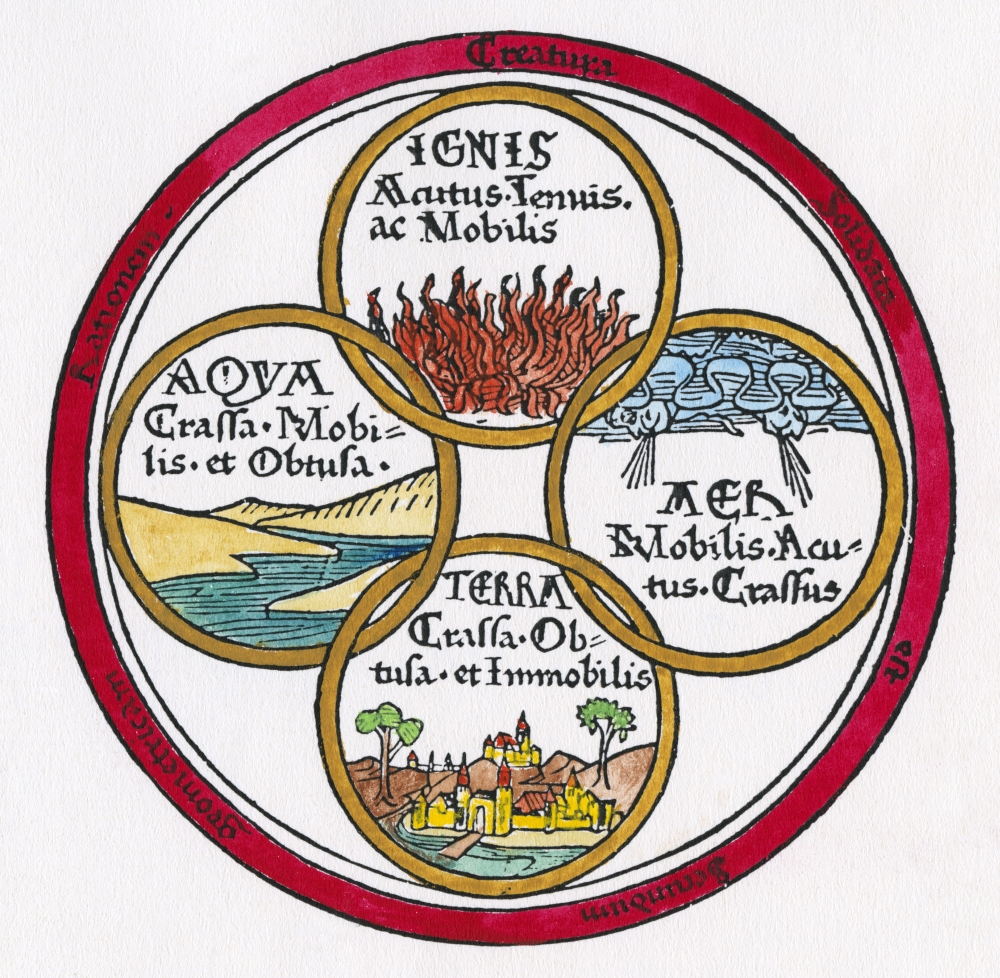
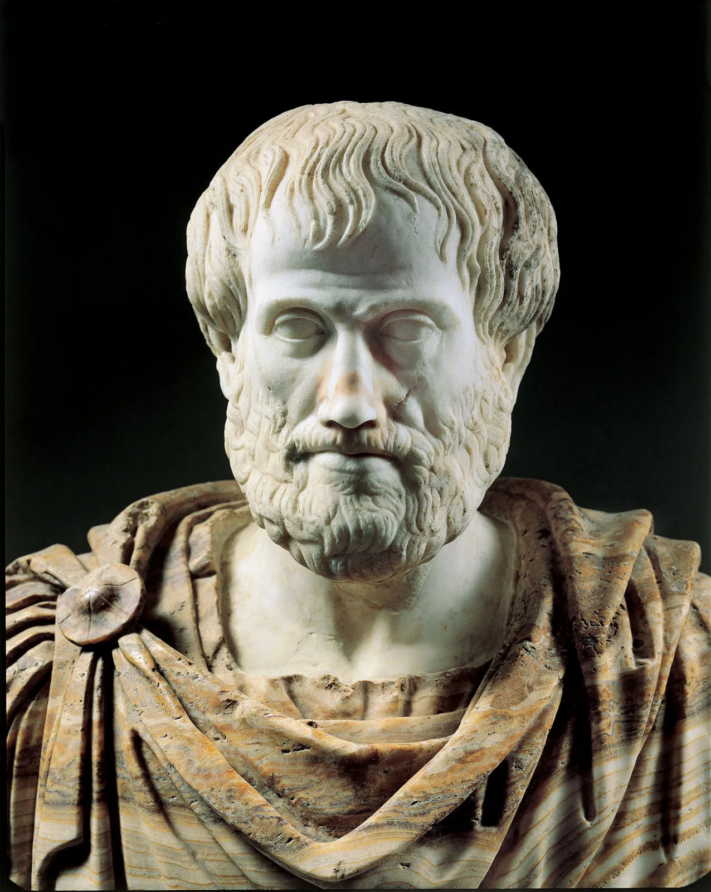
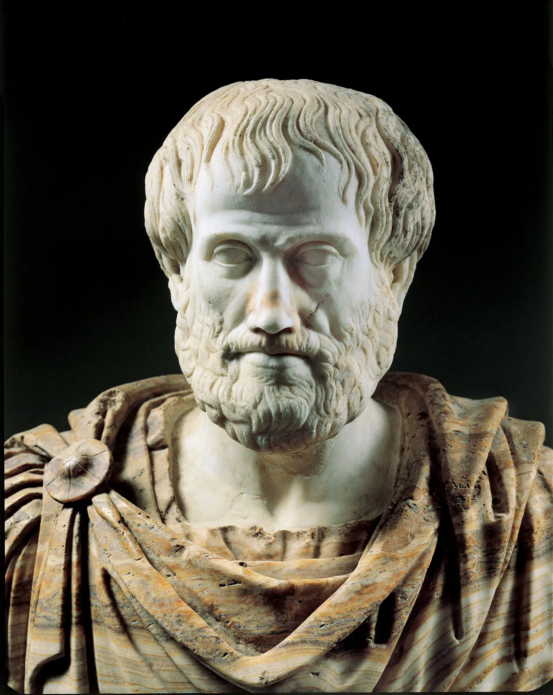

Com va sorgir històricament la filosofia?
L'origen històric de la filosofia va tenir lloc a les costes jòniques, a les ciutats hel·lèniques d'Àsia Menor (l'actual Turquia), entre els darrers anys del segle VII a.C. i els primers del segle VI a.C. Després, al segle V a.C., la filosofia ja es practicava a Grècia i, més en concret, a Atenes.
Les ciutats jòniques eren molt riques i pròsperes a causa de llur xarxa d'intercanvis comercials a la Mediterrània i dels seus contactes amb altres cultures, sobretot l'egípcia i la persa.
A Milet, la més important, va aparèixer per primera vegada la filosofia. Un grup de filòsofs van intentar donar resposta a la pregunta: què és la naturalesa (phýsis)?
És significatiu que el primer dels anomenats «Set Savis», Tales, fos també el primer filòsof. No obstant això, el context en què va poder nàixer i florir la filosofia grega va ser preparat per la poesia, el mite (mûthos), la religió i la vida social. Aquestes instàncies van proporcionar les nocions que els filòsofs van emprar després per interpretar el món.
En aquesta unitat estudiaràs:
- El començament de la filosofia a Grècia.
- La pregunta per l'ésser de la naturalesa.
- Els sofistes i Sòcrates.
- ELs grans filòsofs de la Grècia Antiga: Plató i Aristòtil
Reflexionem
La filosofia, filla de l'enginy i de la pobresa
El pensament de Plató va ser el primer intent de pensar la realitat de manera sistemàtica i completa. Per a ell, la filosofia és l'exercici mitjançant el qual l'ànima s'eleva al món de les idees. En percebre els objectes pels sentits corporals, es desperta a l'ànima l'amor a les essències ideals, que constitueixen el saber més elevat. D'aquesta manera coneix què és el bé, la bellesa, la veritat, la justícia, i pot distingir llur essència de les meres opinions subjectives dels qui no són savis. Aquest impuls cap al saber és l'eros filosòfic, sota la motivació del qual l'ésser humà ennobleix la seua existència i troba la veritable felicitat (eudaimonía), i així, també deixa d'estar guiat per les passions i per les sensacions per seguir en canvi la llum de la seua part racional.
«Quan va nàixer Afrodita [dea de la bellesa] els déus van celebrar un banquet. Entre ells hi havia Poros [l'enginy], fill de Metis [la prudència]. Quan van acabar de menjar, es va presentar a pidolar, com era habitual en celebrar-se un festí, Penia [la pobresa] i es va quedar a la porta. Mentrestant, Poros s'havia quedat adormit al jardí del palau de Zeus. Penia, moguda per la necessitat, va idear engendrar un fill de Poros i va concebre Eros [l'amor]. Per això, l'amor té una naturalesa mixta: com a fill de la pobresa sempre és indigent i necessitat, però com a fill de l'enginy és valent, intel·ligent i hàbil. I per haver estat concebut en nàixer Afrodita és servidor de la bellesa.
Com que la saviesa és una de les coses més belles i l'amor és desig de la bellesa, Eros [l'amor] és també filòsof. Per això, l'amor a la saviesa [la filosofia] es troba a mig camí entre la saviesa i la ignorància. I aquesta és la naturalesa de qui filosofa: la de ser intermedi, ja que està entre els déus, que posseeixen la saviesa, i les bèsties ignorants».
Plató, Banquet, 203b-204c. (Adaptació)
Dialoguem
- Què vol dir que el filòsof es troba, segons Plató, a mig camí entre els déus i les bèsties ignorants?
- Quina llum aporta sobre la naturalesa de l'amor el fet de tenir una naturalesa mixta?
- Què ens vol dir aquest relat mític sobre el caràcter sempre inacabat de la reflexió filosòfica?
- Per què no té acabament el preguntar filosòfic?
El començament de la filosofia a Grècia
Del mite al lógos
Històricament, el pensament filosòfic va aparèixer com la continuació racionalitzada del pensament mític. No hi ha un salt brusc entre mite (mûthos) i filosofia, sinó que els primers filòsofs continuen barrejant motius mítics amb elements racionals. Per tant, és una característica del primer pensament grec la indiferenciació de totes dues esferes.
A la Teogonia d'Hesíode, per exemple, s'explicava el naixement del món a partir del caos per obra de l'amor, que crea l'ordre com un bell cosmos. En aquest poema cosmogònic, tant l'estat de què sorgeixen les coses com la força que les crea apareixen com a categories mítiques.
La mitologia grega aportava, per tant, ja una manera d'explicació sobre com està constituïda la naturalesa (phýsis): el món és un ordre sorgit del caos i es regeix per una llei la necessitat de la qual és inviolable.
Aquest ordre és mantingut per la justícia, que es manifesta en forma d'equilibri i de proporció correcta; és a dir, com l'harmonia que la llei fa sorgir de la lluita entre els contraris.
Aquests conceptes de lluita, ordre, llei, justícia són, doncs, els conceptes amb què s'elaboren les primeres explicacions de la natura i també de la vida social.
La noció d'un principi ordinador que regeix la desmesura i la multiplicitat que trobem a l'arrel de la filosofia també és l'element constitutiu essencial de l'ideal moral, estètic i humà de Grècia. A l'art i a la vida, els grecs van intentar unir elements d'una manera ordenada, unificada i harmoniosa.
El bo i el bell és l'equilibri, la combinació correcta d'elements. La poesia i el drama feien palesa l'estructura ordenada del discurs. De la mateixa manera, la música ordenava els sons segons el ritme i l'harmonia, i l'escultura o l'arquitectura combinaven ordenadament formes i línies.
El problema del canvi i la phýsis
El principal problema per als primers filòsofs va ser l'explicació del canvi a l'univers; és a dir, l'espectacle de la transició de la vida a la mort, de la generació, el creixement i la corrupció, de les coses que, sent d'una manera, deixen aviat ser-ho i, en lloc seu, n'apareixen d'altres que, alhora, canviaran de ser. Aquest procés de transformació contínua va impactar els primers filòsofs i els va empènyer a cercar una explicació de l'ordre del canvi.
Si les coses canvien, què són de veres? Si una cosa passa de ser blanca a ser verda, aleshores és i no és blanca. Si una cosa que era deixa de ser, resulta que la mateixa cosa és i no és. La multiplicitat i la contradicció penetren en l'ésser mateix de les coses. Els pensadors grecs es pregunten aleshores què són les coses de veres, és a dir, sempre, darrere de llurs múltiples aparences.
Cerquen, per tant, en la multitud d'aspectes de les coses, llur arrel permanent i immutable, la causa o principi (arkhé) de llur ésser per damunt de la variabilitat i que és capaç de donar-ne raó. Per això, allò veritablement interessant és la pregunta inicial de la filosofia: què és la naturalesa (phýsis) o el principi d'on sorgeix tot?
Van pensar que, a darrer terme, totes les coses es caracteritzen per llur naturalesa (phýsis), la qual els ha estat conferida en nàixer. Un ésser humà, per exemple, és sempre un ésser humà en totes les edats de la vida perquè va rebre la naturalesa humana a l'hora de nàixer. Per això els filòsofs presocràtics centren l'interès en la naturalesa com a causa originària de les coses que persisteix a través de tots els canvis i com a principi explicatiu del canvi, de l'esdevenir.
L'aportació que fan consisteix a plantejar les eternes preguntes de la humanitat (què és l'ésser?, per què hi ha l'ésser en comptes del no-res?, què és el món i cap on va?, etc.), de manera que, des d'aquest nivell, els problemes puntuals i concrets de la política, l'economia o la ciència s'il·luminen amb significats nous. Això és, justament, allò en que els filòsofs presocràtics van ser figures exemplars, ja que, a partir d'ells, el filòsof es dedica a la meditació i a la reflexió sobre «els problemes eterns».
Comprèn, pensa, investiga...
- Comparar. En què es diferencia una explicació mítica sobre l'origen del món de l'explicació filosòfica?
- Quin era l'ideal primordial de la cultura grega i com esdevé també el principi bàsic de la filosofia?
- Enumerar. Enumera els motius pels quals el primer tema de la reflexió filosòfica és el canvi a la natura.
Què és la naturalesa?
Les explicacions monistes
Es pot considerar, doncs, l'itinerari del pensament presocràtic com la conquesta progressiva d'una comprensió filosòfica de la naturalesa que finalment culmina en l'atomisme de Demòcrit. El que perseguien aquests filòsofs era un pensament lògico-racional (lógos) més enllà del mite (mûthos), capaç de concentrar una multiplicitat d'experiències i de percepcions, i sotmetre-les conceptualment a una unitat lògica.
El primer a aconseguir-ho va ser Tales de Milet, que va proposar l'explicació segons la qual tot allò que hi ha sorgeix a partir de les transformacions d'una única substància originària: l'aigua. Després d'ell, Anaximandre va pensar que calia no considerar una matèria concreta com l'aigua, sinó un ápeiron o substància indeterminada increada i imperible, inesgotable i indestructible.

 

Heraclit i Anaxímenes van suposar un avanç més gran, en no acceptar, el primer, un element estable en el continu esdevenir del món natural, i en proposar, el segon, l'alternança de la condensació i la rarefacció de l'aire com a esquema explicatiu per comprendre canvis evolutius d'aquesta matèria primordial.
Atenció especial mereix Parmènides, que formula la primera teoria metafísica sobre l'ésser. Per a ell, el que hi ha és l'ésser, que és etern, immutable i sempre idèntic a ell mateix. El canvi de les coses que percebem és pura aparença, il·lusió dels sentits que ens oculten l'ésser que de veres constitueix les coses.


Els sistemes pluralistes
Anaxàgores representa també un altre moment de maduresa en aquest desenvolupament del pensament grec amb la hipòtesi d'un moviment circular, purament mecànic, com a causa de les transformacions de l'univers a partir d'unes partícules materials que anomena homeomeries. Aquest moviment estaria dirigit per un principi de naturalesa espiritual que anomena noûs («intel·ligència»).
 
En aquesta mateixa línia, la principal aportació d'Empèdocles rau a atribuir al moviment de la matèria els impulsos psíquics de l'amor i l'odi com a factors motors del canvi, cosa que fa superflu el noûs d'Anaxàgores. És a dir, per a Empèdocles totes les coses estan compostes pels quatre elements: terra, aire, aigua i foc, i l'amor crea tot allò que existeix a partir d'aquests elements, mentre que l'odi els separa.
Finalment, aquest procés intel·lectual va concloure amb el sistema atomista de Leucip i Demòcrit. Aquest sistema va eliminar les últimes restes mítico-antropomòrfiques encara presents a la filosofia d'Empèdocles i va substituir els principis de l'amor i l'odi com a factors del moviment per la capacitat intrínseca dels àtoms de moure's en l'espai buit; això els acosta bastant a certes hipòtesis de la física moderna.
El sistema de Demòcrit és, en suma, la culminació coherent dels diferents pensaments precedents, ja que supera de forma completa els elements mítics i ofereix la imatge de l'esdevenir de l'univers com a causa del simple moviment mecànic dels àtoms, sense haver de menester cap intervenció sobrenatural o transmundana.

A partir d'aquestes consideracions sobre el pensament dels filòsofs presocràtics, tant dels monistes com dels pluralistes, cal revalorar la importància del pensament presocràtic i bandejar la imatge d'aquest primer període de la filosofia com una etapa infantil i immadura del pensament occidental.
No només s'ha de considerar la reflexió sobre les propostes d'aquests pensadors quant a la rellevància filosòfica que posseeixen, sinó també com van encarnar, per primera vegada, la figura del científic consagrat a l'exercici de pensar, fins i tot al preu de l'aïllament i del conflicte amb la societat.
Comprèn, pensa, investiga
- Fes un esquema amb les respostes que els primers filòsofs donen a la pregunta sobre què és la naturalesa i fes un comentari de cadascuna.
- Comparar. En què s'oposen les filosofies d'Heraclit i de Parmènides? Raona la resposta.
- Interpretar. Assenyala els principals motius pels quals, al teu parer, són importants els primers filòsofs grecs.
Els sofistes i Sòcrates
Qui van ser els sofistes?
Els sofistes van ser mestres del saber que, procedents majoritàriament de les escoles filosòfiques dels presocràtics, van instal·lar-se a Atenes al segle V a.C. per divulgar el coneixement que hi havien adquirit. Tot i això, llur propòsit principal era ensenyar als joves les tècniques de l'eloqüència i el camí del triomf en la carrera política.
Els sofistes es movien ja dins el marc de la democràcia grega. En aquestes condicions polítiques, el requisit previ per desenvolupar una carrera social afortunada era el triomf als fòrums públics de la ciutat, a l'assemblea i als tribunals. Per assolir l'èxit calia conèixer la situació política i social i construir arguments per convèncer i persuadir els ciutadans.


Per als sofistes, la virtut pròpia de l'ésser humà, allò que el fa triomfar i tenir èxit, és el poder de persuadir. Com a mestres d'aquesta virtut, i amb la finalitat pràctica de trobar la millor manera d'ensenyar-la, els sofistes van investigar l'origen i el desenvolupament de les representacions i de les decisions humanes. En advertir la diversitat d'opinions i interessos en lluita, es van plantejar el problema de si, en general, pot haver-hi una veritat universalment vàlida.
La resposta que ofereixen a aquest problema consisteix a defensar un relativisme subjectivista d'acord amb el qual no hi ha una norma vàlida de conducta per a tothom fundada en la naturalesa, tret de l'impuls individual natural.
L'èxit és l'únic criteri de valor de les accions morals, ja que no hi ha cap codi moral amb validesa universal, fundat en l'ordre natural. El valor de les lleis i de les normes és relatiu (diferent en cada lloc i època) i convencional (acordat pels éssers humans).
Íntimament unit a aquest relativisme ètic apareix el relativisme gnoseològic, segons el qual l'ésser humà no coneix les coses com són, sinó com són percebudes per cadascú individualment. La dialèctica i l'argumentació ja no estan al servei de la veritat, sinó que s'empren com a instruments de persuasió amb l'objectiu d'aconseguir l'èxit a la vida pública.
Els sofistes més cèlebres són Protàgores d'Abdera i Gòrgies de Leontins. Altres sofistes són Pròdic, Antifó, Hípies, Trasímac i Càl·licles.
Les ensenyances de Sòcrates
A diferència dels sofistes, Sòcrates es va mantenir allunyat de la vida política i es va dedicar a la investigació filosòfica, entesa com un incessant examen de si mateix i d'altri.
Home de gran temperament moral i guia espiritual dels joves aristòcrates atenesos, va ser víctima del recel i de l'odi dels demòcrates, que van acusar-lo de corruptor i d'impiu. Va ser condemnat a mort i va beure amb absoluta calma la cicuta, mentre conversava amb els amics sobre la immortalitat de l'ànima.

Allò que diferencia, bàsicament, Sòcrates dels sofistes és la fe en la raó i el convenciment que hi ha una veritat universalment vàlida, que per als sofistes és relativa i convencional.
No obstant això, Sòcrates no recorre ja a una raó metafísica comuna a tots els éssers humans ni a la naturalesa per fonamentar la veritat, tal com havien fet els seus predecessors, sinó que recolza sobre una raó conceptual: el coneixement universalment vàlid és el que abstrau allò comú d'un conjunt de casos empírics i ho reuneix en un concepte.
La ciència vertadera és un entramat de relacions entre conceptes que defineixen allò que les coses tenen de comú i de permanent. Amb aquest plantejament, Sòcrates creu que pot contrarestar també el relativisme ètic dels sofistes.
El mètode per assolir aquestes definicions universals que constitueixen el fonament del coneixement i la base de l'ètica és el raonament inductiu, que Sòcrates anomena maièutica, que constitueix la segona gran aportació d'aquest filòsof.
També és important la seua doctrina moral, que lliga el coneixement i la virtut. Per a Sòcrates, la virtut (areté) és el recte coneixement del bé. D'altra banda, la realització d'aquest bé que la raó mostra és la causa i la condició de la felicitat (eudaimonía).
Sòcrates no va deixar cap escrit, per tant només se'n coneix la doctrina a través de les referències que fa el seu gran deixeble Plató en els seus diàlegs ---en molts dels quals Sòcrates és el protagonista---, l'historiador Xenofont i altres autors de l'Antiguitat.
Comprèn, pensa, investiga
- Quines diferències pots assenyalar entre els sofistes i els filòsofs presocràtics precedents?
- Quines són les principals doctrines dels sofistes i sobre quins temes tracten?
- En què s'oposa el pensament de Sòcrates al dels sofistes?
Els grans filòsofs clàssics: Plató i Aristòtil
Plató
El naixement, la configuració i el desenvolupament del pensament platònic constitueix un dels esdeveniments més significatius i determinants de la història sencera del pensament europeu, però també un dels problemes més complicats i difícils de resoldre. El seu nucli principal és la teoria metafísica de les idees.
Seguint l'exemple i els ensenyaments del seu mestre Sòcrates, Plató també es va enfrontar a l'escepticisme dels sofistes i va afirmar que sí que és possible el coneixement de la veritat per damunt de les diverses opinions particulars subjectives. Per això cal anar més enllà de les dades que ens ofereixen els sentits, atès que allò que percebem són només les aparences de les coses.
Però més enllà de les aparences es troba el món de les essències o idees, al qual pertany també la nostra ànima i on regna la idea de bé, causa de les altres idees i de totes les coses.
L'ésser humà té a l'interior la possibilitat de copsar allò que les coses són, més enllà de les aparences que mostren els sentits, ja que l'ànima, per la seua convivència amb les idees, és capaç de recordar-les remuntant-s'hi a partir de les dades que obté del món sensible. Conèixer és, per tant, recordar allò que ja se sap. A aquest procés d'ascensió que condueix el savi del món sensible a l'intel·ligible, i al mateix saber que tracta de les idees, Plató l'anomena dialèctica.
Per articular aquesta convicció, Plató va dissenyar una metafísica que distingeix entre món intel·ligible (lloc de les idees, on el coneixement és epistéme) i món sensible (lloc de les aparences, on el coneixement és dóxa), va elaborar una teoria del coneixement que diferencia entre diversos graus i maneres de conèixer i va formular una concepció de l'ésser humà com a compost d'ànima i cos. Després va fer servir aquestes teories per desenvolupar una doctrina ètica basada en la justícia i una concepció política que proposa una forma ideal d'organització de la societat en què governen els savis.
De Sòcrates accepta Plató el descobriment dels conceptes universals (que a la seua filosofia es converteixen en realitats metafísiques o idees del món intel·ligible) i la dialèctica com a mètode per assolir el coneixement veritable d'aquestes idees.
 

Aristòtil
Deixeble de Plató, Aristòtil és un dels filòsofs més importants de tots els temps. Entre les aportacions més significatives que va fer hi ha l'organització i l'articulació de les ciències, a les quals fa precedir la lògica, de la qual Aristòtil és el primer expositor sistemàtic, com a instrument al servei del coneixement científic.
Concep la metafísica com a teoria de la substància i fonament de les altres ciències, i ofereix una explicació de l'univers amb la qual pretén resoldre el problema plantejat pels filòsofs grecs que van precedir-lo: com és possible pensar un ésser unitari i permanent sota la multiplicitat canviant de les aparences?
Per Aristòtil, el veritable ésser és l'essència (eîdos), i es troba en les coses; és a dir, no admet que l'ésser de les coses constituïsca un món a part, a sota o més enllà de les aparences. Per a Aristòtil, la realitat dels éssers, copsada pel concepte, és llur essència, comuna al conjunt dels individus que comprèn. D'aquesta manera, els fenòmens empírics són la realització mateixa d'aquesta essència.
Per a explicar el canvi i l'esdevenir al món, Aristòtil exposa la doble relació entre matèria-forma i entre potència-acte. L'esdevenir o el tenir lloc al món és, doncs, el procés en què l'essència, de la mera possibilitat o potència, es transforma en una cosa real (acte) gràcies a la forma.
Només hi ha essències en la sèrie de llurs manifestacions, ja que fora d'aquestes no és possible llur realització. Així, allò general no és real sinó en l'àmbit d'allò individual, i allò individual només és perquè és on es realitza allò general.
Les coses individuals, és a dir, les substàncies, són, doncs, compostes de matèria i forma, i són sotmeses al canvi impulsat per les causes que hi actuen. La causa última del moviment, la forma pura o acte suprem, per a Aristòtil, és Déu, el «motor immòbil» que posa en marxa el món.
A les obres d'ètica, desenvolupa la seua concepció del bé i distingeix entre virtuts morals i intel·lectuals. Tota virtut és un just mig entre l'excés i la privació, que són vicis tots dos. Les virtuts són hàbits, és a dir, s'adquireixen pel costum d'obrar d'una manera determinada, i els éssers humans les cultiven per tal d'assolir la felicitat, que consisteix en el coneixement.
Comprèn, pensa, investiga
- Explica les característiques principals de la teoria de las idees de Plató.
- Comparar. En què consisteix la filosofia per a Plató i per a Aristòtil i en què es diferencien?
- Quin és l'objecte del pensament ètic d'Aristòtil?